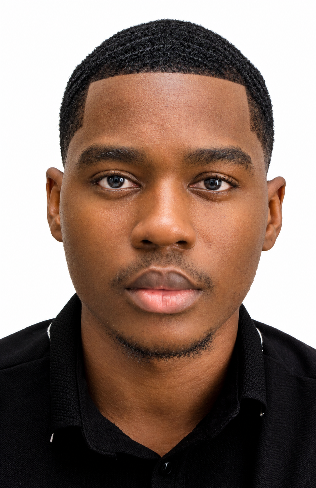
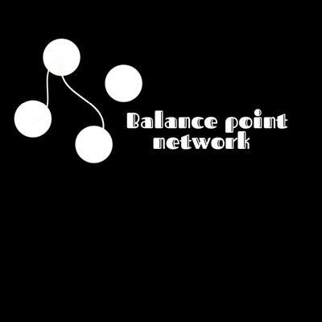
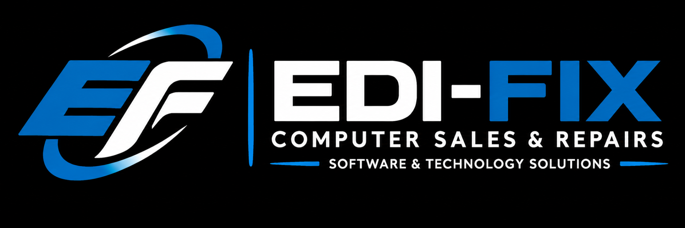

EDUCATION
Software Engineering
Miva Open University
Currently learning and building foundationsTHE CATALYST

CHUKWU FAVOUR E. / 2026A Software Engineering student, entrepreneur and multidisciplinary creator driven by curiosity and the desire to build meaningful things.
My fascination with invention began at an early age. Today, that curiosity spans technology, graphic design, computer hardware and software, interior decoration, and creative problem-solving.
Beyond my technical interests, I founded Balance Point Network, a mental health initiative supporting men, and I own EDI-FIX, a technology brand focused on computer sales, repairs and practical solutions.
I'm particularly interested in robotics, innovation and the possibilities of engineering. My ambition is to build a technology company that creates useful solutions and makes a meaningful difference.
I enjoy connecting ideas across different disciplines, exploring possibilities and turning what I learn into something practical.
“I am not defined by one discipline. I am defined by what I can create with what I learn.”
EDUCATION
Miva Open University
Currently learning and building foundationsSKILLS & INTERESTS
BEYOND THE SCREEN
I enjoy visual creativity, exploring how things work and imagining better ways to solve everyday problems.
A short introduction, in my own voice.

A mental health initiative focused on supporting men, encouraging emotional openness and creating a safe community where men can feel, speak and heal without judgment.

A technology business focused on computer sales, hardware and software repairs, electronics and practical technology solutions.